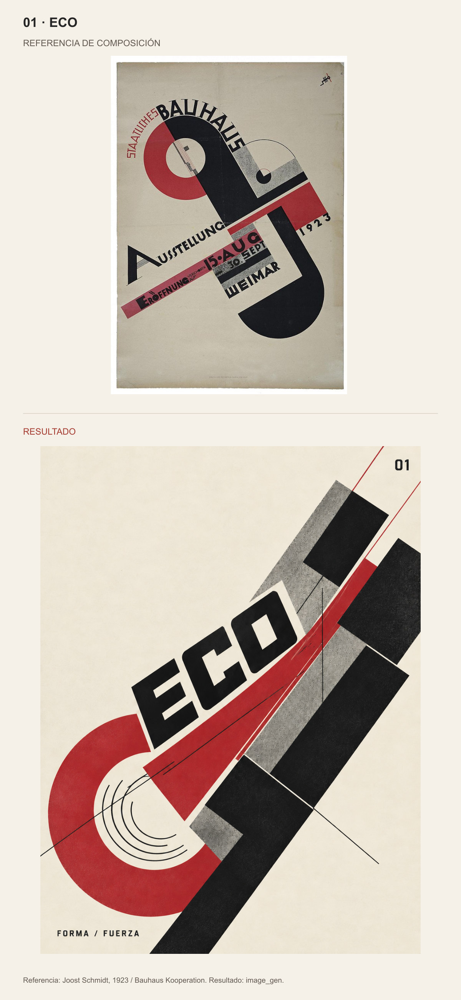
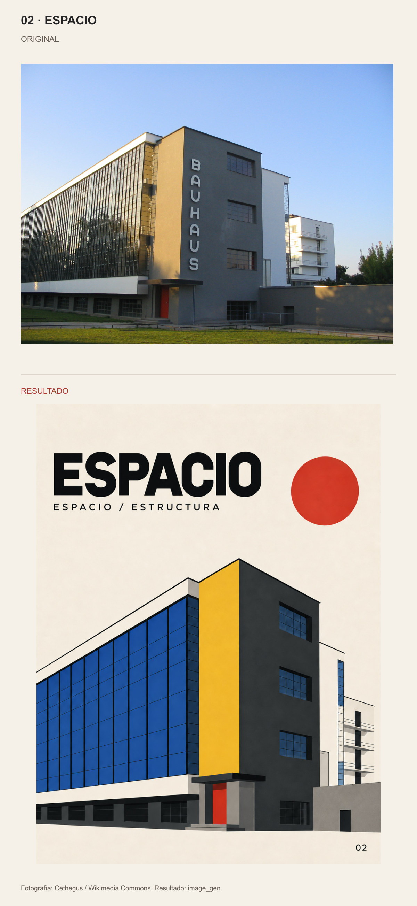
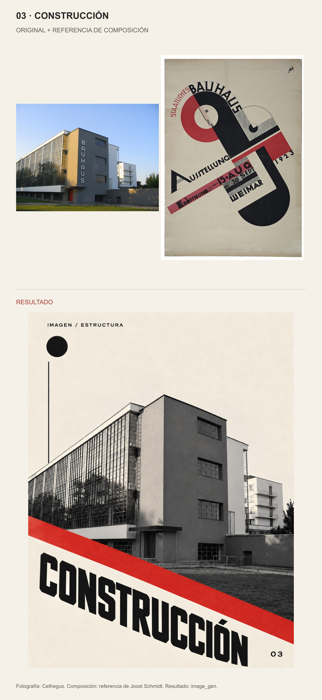
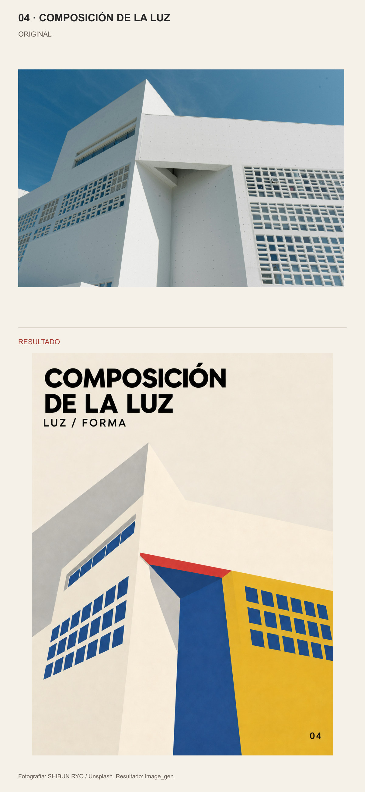
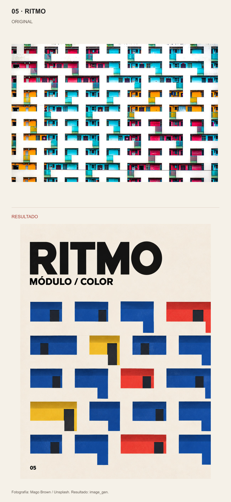
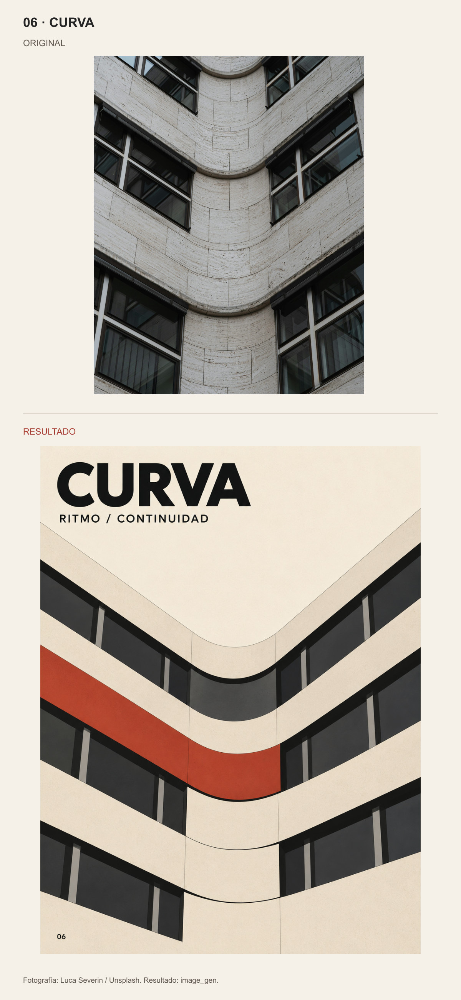
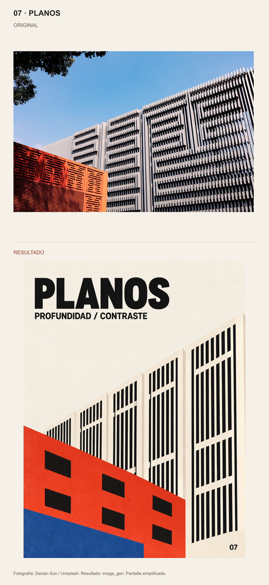

01 · ECO

Referencia: Joost Schmidt, 1923 / Bauhaus Kooperation. Resultado: image_gen.
Original arriba · Resultado abajo. Proporciones completas, sin recortes. Skill · Documentación y fuentes

Referencia: Joost Schmidt, 1923 / Bauhaus Kooperation. Resultado: image_gen.

Fotografía: Cethegus / Wikimedia Commons. Resultado: image_gen.

Fotografía: Cethegus. Composición: referencia de Joost Schmidt. Resultado: image_gen.

Fotografía: SHIBUN RYO / Unsplash. Resultado: image_gen.

Fotografía: Mago Brown / Unsplash. Resultado: image_gen.

Fotografía: Luca Severin / Unsplash. Resultado: image_gen.

Fotografía: Declan Sun / Unsplash. Resultado: image_gen. Pantalla simplificada.